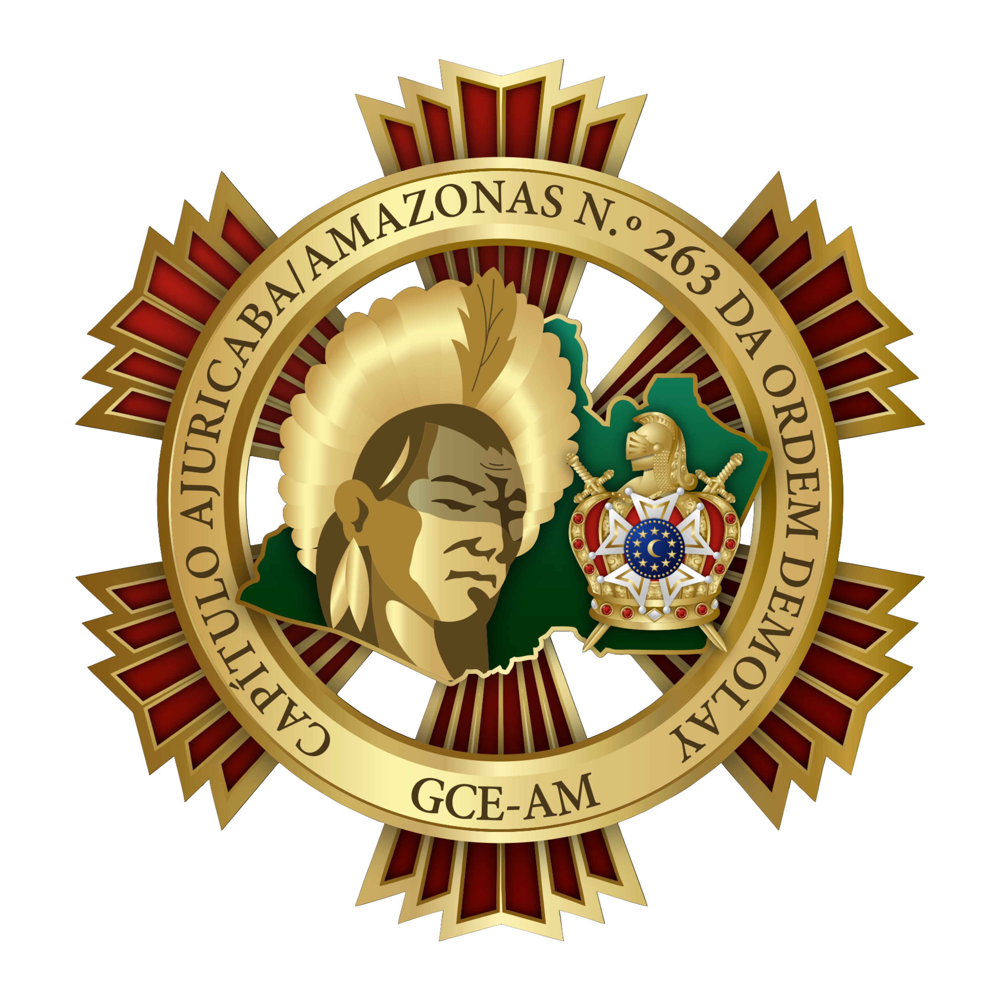

História do Capítulo Ajuricaba/Amazonas nº 263

Resumo
Endereço: Rua Leovegildo Coêlho, 294, Ao Lado da Maquipel, Centro, CEP: 69005-090
Corpo Patrocinador: Grande Benemérita Loja Simbólica Amazonas (CMSB)
Redes Sociais: Instagram
Histórico
Fundação: 30/08/1995
Instalação: 25/02/1996
O Capítulo Ajuricaba/Amazonas Nº 263 da Ordem DeMolay, patrocinado pela Grande Benemérita Loja Simbólica Amazonas Nº 02 - GLOMAM, foi fundado às 18h do dia 30/08/1995, na sede da Grande Loja Maçônica do Amazonas, na época situada à Rua Comendador Clementino, nº 296 - Centro, em uma reunião em que estiveram presentes os Tios Maçons Alberto Ferreira do Nascimento, Fernando Melo de Carvalho, Francisco Luciano de Oliveira Nunes, Francisco Soares Filho, Glaucimar Francisco Fontes de Lima, José Samuel Lêdo dos Santos, Lázaro Gonçalves Sobrinho, Manoel Américo Guedes, Olzair Faustino Matute e Renan Corrêa Peixoto.
Sua Instalação deu-se meses mais tarde, precisamente às 08h do domingo do dia 25/02/1996. A Cerimônia foi realizada no Templo da Grande Benemérita Loja Simbólica Amazonas Nº 02 - GLOMAM, situado à Rua Leovegildo Coelho, nº 294 - Centro, e contou com a presença de Ilustres Maçons como o Tio Renan Corrêa Peixoto, Sereníssimo Grão-Mestre da GLOMAM na época, e do Tio Olzair Faustino Matute, Primeiro Oficial Executivo do Estado do Amazonas.
Compõem a primeira turma de DeMolays do Capítulo, os Irmãos: Alberto Lúcio Santos, Anderson Freitas da Fonseca, Anderson Junqueira Guminiak, Antônio Guilherme A. dos Santos, Arlei Freitas da Cunha, Carlos Maurício R. da Costa, Cleobery Vinicius C. de Albuquerque, Dan D'Oliveira Pinheiro, Eduardo Gomes Matute, Eduardo Ribeiro Furtado, Fernanrdo Barreto Lima, Fernardo Krichanã dos Santos, Mário Krichanã dos Santos, Mauro Renato de Araújo Coelho, Michel Rodrigues Pereira, Michel de Brito Abraão, Reinaldo Gomes de Melo, Rômulo Alberto L. Carvalho, Rodrigo Santos Pinheiro, Sergio Miyachi Moraes, Tales de Souza Camurça Lima e Victor dos Santos Paes.
Nominata da Instalação
- MC: Tio Francisco da Costa Castro
- 1C: Tio Ronaldo Costa Leite
- 2C: Tio Alysson Oliveira de Almeida
- 1D: Tio Fabiano José Afonso
- 2D: Tio Carlos Antonio de Carvalho Silva
- SENT: Tio Juarez Camurça
- 1M: Tio Francisco Soares Filho
- 2M: Tio Alexandre Pinto
- CAP: Tio Paulo Gustavo D'Almeida Porto
- PB: Tio Gilmar Isaac Lima
- ESC: Tio Alberto Ferreira do Nascimento
- HOSP: Tio Wolfgan Guminiak
- ORAD: Tio Lázaro Gonçalves Sobrinho
- TES: Tio Fernando Melo de Carvalho
- 1P: Tio Glaucimar Francisco Fontes de Lima
- 2P: Tio Fernando da Silva Morais
- 3P: Tio Paulo Cezar Santos
- 4P: Tio Mario Antio Zogaheb Abrahão
- 5P: Tio Gabriel Melgueiro Neto
- 6P: Tio Pedro Paulo Matute
- 7P: Tio Dermeval Souza Pinheiro
- ORG: Tio Aramis Mafra Castelo Branco
Nominata da primeira gestão administrativa
- MC: Irmão Fernando Barreto Lima
- 1C: Irmão Tales de Sousa Camurça de Lima
- 2C: Irmão Anderson Junqueira Guminiak
- 1D: Irmão Michel Rodrigues Pereira
- 2D: Irmão Cleobery Vinicius Carvalho de Albuquerque
- 1M: Irmão Rômulo Alberto L. Carvalho
- 2M: Irmão Eduardo Gomes Matute
- MCer: Irmão Reinaldo Gomes de Melo
- Sent: Irmão Michel de Brito Abraão
- Cap: Irmão Eduardo Ribeiro Furtado
- Orad: Irmão Alberto Lúcio Santos
- Esc: Irmão Carlos Maurício Ribeiro da Costa
- PB: Irmão Mário Krichana dos Santos
- Tes: Irmão Rodrigo dos Santos Pinheiro
- Hosp: Irmão Mauro Renato de Araújo Coêlho
- 1P: Irmão Sérgio Miyachi Moraes
- 2 P: Irmão Victor dos Santos Paes
- 3 P: Irmão Anderson Freitas da Fonseca
- 4 P: Irmão Fernando Krichana dos Santos
- 5 P: Irmão Antonio Guilherme Albuquerque dos Santos
- 6 P: Irmão Dam D'Oliveira Pinheiro
- 7 P: Irmão Marcelo Henrique Brito Abraão
Presidentes do Conselho Consultivo
O primeiro Presidente do Conselho Consultivo foi o Tio Paulo Gustavo D'Almeida Porto.
Lista dos Mestres Conselheiros
O Capítulo já teve como Mestre Conselheiro, de 1996 à 2021, os seguintes Irmãos, respectivamente: Fernando Lima, Saymon Erickson, Alessandro Silva Ribeiro, Rodrigo Pinheiro, Carlos Mauricio, Leocádio Lopes, Luiz Carlos, Sérgio Augusto, Vanylton dos Santos, Fillipe Alves, Diego Vieira, Etzel Santos, Marcos Oliveira, Rickson Colares, Paulo de Tarso, Daniel Santos, Gustavo Bezerra, José Renato, Rennier Recco, Adriano Gomes, Douglas Aguiar, Samuel Calôba, Túlio Taketomi, Henrick Horta, Danilo Vitor, Stephano Santos, Wellinton Mauricio, André Prazeres, Davi Gonzalez, João Paulo, Bruno Okada, Johny Vieira, Pedro Camargo, Victor Ordozgoite, Guilherme Destro, Gabriel Perez, Bruno Fernandez, Carlos Moraes Neto, Fábio Lincoln, Adeilson Diniz e João Moraes.
História e Legado
O Capítulo Ajuricaba/Amazonas recebe este nome em homenagem ao índio Ajuricaba, líder da tribo indígena Manaós (região onde hoje está a cidade de Manaus). Ele era muito conhecido pela sua bravura, coragem e sendo de justiça, tanto pelos índios das tribos vizinhas quanto pelos colonizadores portugueses. Por muito tempo, a tribo dos Manaós resistiu aos ataques sistemáticos dos portugueses, enquanto todas as outras tribos sucumbiam. Até que um dia, os portugueses conseguiram reforços da Coroa de Portugal e conseguiram fazer frente aos índios. Foi uma batalha muito difícil para ambos os lados, pois os índios, liderados por Ajuricaba, ofereceram enorme resistência. Entretanto, o poderio de fogo português era superior, e a tribo foi derrotada. Ajuricaba foi preso, e seria levado à Belém/PA para julgamento. Porém, no caminho para Belém, através do Rio Amazonas, ele decidiu se atirar nas águas barrentas do rio, para não se entregar. Ele morreu afogado e seu corpo nunca foi encontrado. Por seu exemplo de bravura, coragem e, principalmente, liderança, seu nome foi escolhido para batizar nosso Capítulo, seu exemplo não serve apenas para nós, mas também para qualquer pessoa.
Fazendo jus ao seu nome, o Capítulo sempre foi um guerreiro. Resistiu a tempos difíceis, e por ser o Capítulo da esperança - pois nasce após dez anos do surgimento e o adormecimento repentino da Ordem DeMolay no Estado - ajudou todos os demais Capítulos do Estado a serem soerguidos e/ou fundados, bem como o primeiro Capítulo do Estado de Roraima, e foi fundamental na fundação do primeiro Priorado, da primeira Corte de Chevalier, do Primeiro Castelo dos Escudeiros, do primeiro Clube de Mães e do primeiro Preceptório de Legionários do Estado.
O Capítulo presenciou momentos históricos como a cisão do Supremo Conselho, em 2004 durante a XXXIII CMSB, viu surgir o SCODRFB, presenciou a unificação e o nascimento do SCDB. Já se fez presente, com suas comitivas, em muitos CNODs, seus membros já ocuparam cargos no Supremo Capítulo e, inclusive, o primeiro Mestre Conselheiro Nacional Adjunto é DeMolay do Capítulo Ajuricaba/Amazonas. Além de que muitos dos Past-MCEs e Adjuntos e Past-GMEs e Adjuntos são oriundos das fileiras do Capítulo.
Atualmente, o Capítulo se reúne no Templo Grande Benemérita Loja Simbólica Amazonas Nº 02 - GLOMAM, situado à Rua Leovegildo Coelho, nº 294 - Centro, Loja a qual é sua patrocinadora. Exerce suas funções como Capítulo da Ordem DeMolay, seja no desempenho de trabalhos ritualísticos, filosóficos, filantrópicos ou fraternais, ou na luta dos bons cidadãos contra o mal, sempre buscando o que é justo, correto e regular. Inculcando nos jovens DeMolays desse Capítulo as lições de Frank Sherman Land, Alberto Mansur e das Sete Virtudes Cardeais, e fomentando a constante luta em favor da manutenção das escolas públicas, e das liberdades religiosa, civil e intelectual.